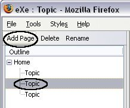
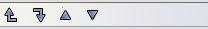
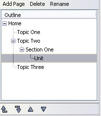
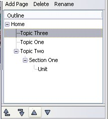
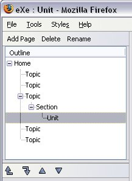

Authoring with eXe/Lesson 3 - Building a learning resource/Outline
Like most projects you might undertake in life, a little time invested in planning and design goes a long way to coming up with a quality finished product. Developing a quality learning resource is no different. It is critical that you invest some time in considering the structure of your resource.
The Outline tool set allows you to define the structure your eXe project will take. On startup the authoring interface displays the tools (Outline and iDevices) to the left of the authoring pane. The Outline tools deliver a navigable structure for easy and effective accessibility to all content topics.
| Homepage | The Home node is the first page displayed when your project is exported to the web or an LMS. This is a parent node and the only page at this level. All additional pages are added below the Home page from time to time throughout this resource we may refer to these pages as 'child nodes'. A good use of the Homepage in a content package is to provide an overview, describing the context in which the resource has be developed, or to perhaps provide high level explanatory information on the rationale for the content contained in the package. It's important not to leave this page blank otherwise the very first page of your resource will be empty apart from the navigation panel. |
| Adding pages | To add additional pages select the parent page by highlighting the parent level and click the Add Child button. 
From the image you will see that one of the 'Topic' pages has been highlighted. By clicking the 'Add Page' button a new page will be added under this Topic. This Topic becomes a parent node. The number of child nodes that can be added are limitless however your design will determine the number of subtopics required to adequately cover the learning content. Less is more is a good rule of thumb. |
| Delete pages | Deleting pages is a simple operation in eXe. To delete a page, select the node you want to delete and click the delete button. A dialogue message displays to double check that you want to continue with this action then clicking OK completes the action. Please note that once the page is deleted it cannot be recovered. |
| Rename pages | eXe provides a default taxonomy namely - Topic, Section, Units. This taxonomy can be changed using eXe's Properties function but many users will probably want to customise each page with a unique page name. To rename a page, select the page you want to rename and either single click and click the Rename button or double click. Either of these actions will open a dialogue message prompting you to enter the new page name. |
| Promote/Demote arrows | The promote/demote arrows are located beneath the outline pane. Selecting a node and clicking on one of the arrows will change the position of that node with the outline structure.
 The first 2 arrows move pages between levels, e.g. Move a section to the Topic level and vice versa. The 2 remaining arrows change the order of the pages, e.g. 
 |
| Give it a go!
Open eXe and have a go at the following actions.

|